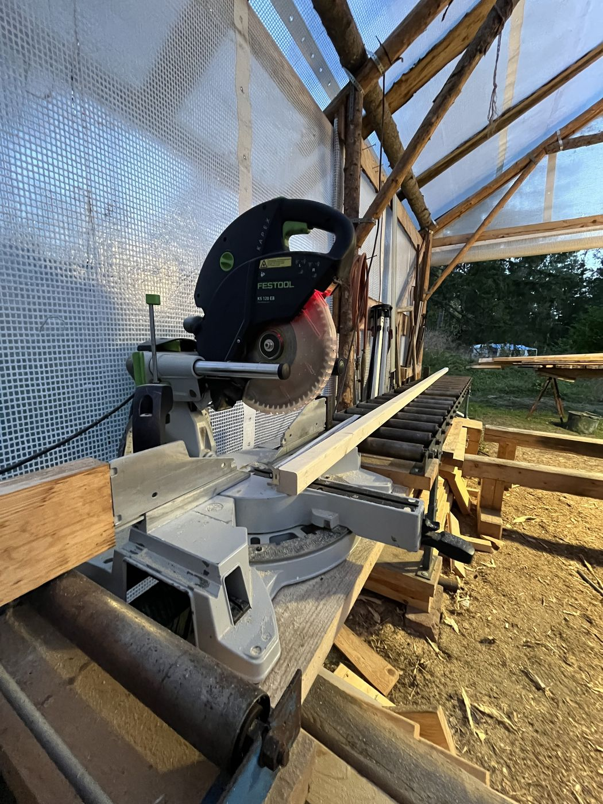
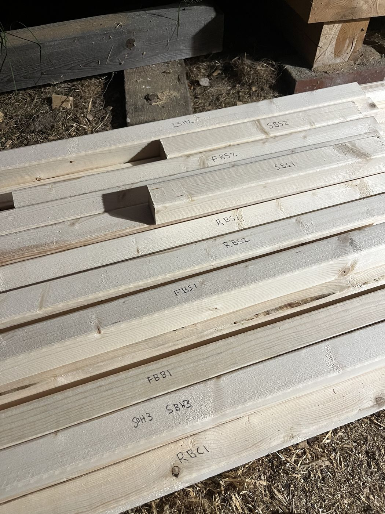

FIELD NOTES
Can AI build a toilet yet?
Field notes 01
How it's going
Real-world progress following the drawing to build an outdoor toilet.
Latest model finding · diagonal fastening
The fastening review found that diagonal-to-rail screws could meet the 120 mm rail screws at the frame corners. The door, side, and back diagonals now run corner to corner, with mitred ends stopped at the inner faces of the vertical members instead. The audit models the angled screw paths and regression-tests the resulting clearance before the timber reaches the bench.

